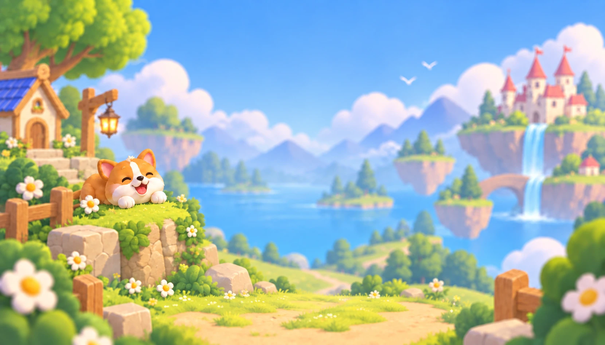
assets/backgrounds/valley-landscape.webp1660 × 948 · RGBExisting project artwork, not reconstructed occluded background from generated concept.透明切图检查页，不是可运行游戏。未提供的交互态由 CSS/真实状态实现；保留当前语言设置行。

assets/backgrounds/valley-landscape.webp1660 × 948 · RGBExisting project artwork, not reconstructed occluded background from generated concept.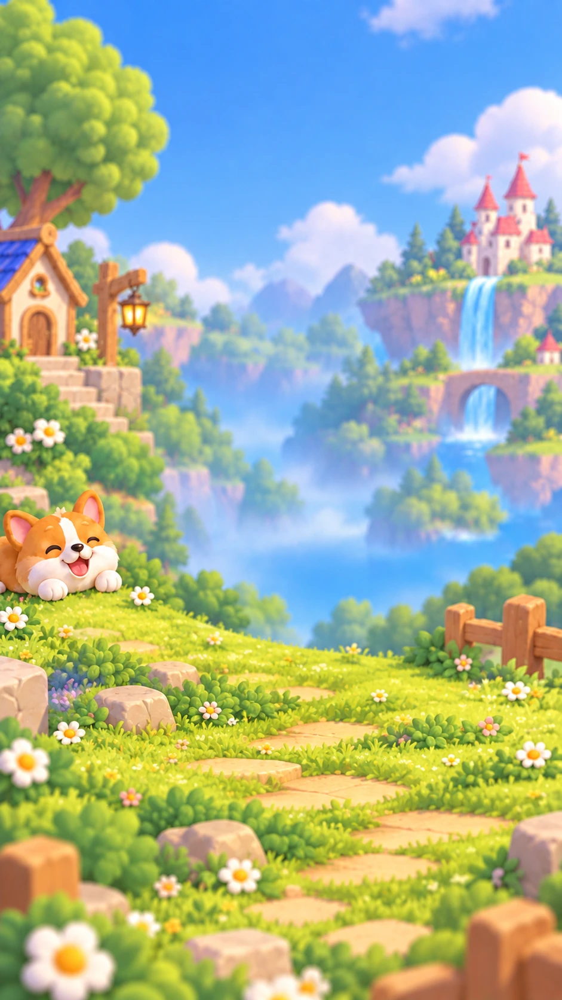
assets/backgrounds/valley-portrait.webp941 × 1672 · RGBExisting project artwork, not reconstructed occluded background from generated concept.assets/icons/gear-purple.png79 × 80 · RGBAGear centre hole intentionally transparent (hole policy 'none'; the purple body has no other enclosed holes), so the button face shows through as designed.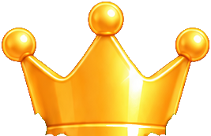
assets/icons/home-crown-large.png267 × 173 · RGBAPanel text (top-score label / value) excluded - only the gold crown glyph is kept. All enclosed interior holes (the central vertical shine and the smaller highlights) are filled OPAQUE with the source RGB; the gold body contains no transparent speckling. Readiness: assembly-only, NOT standalone-ready. The lower edge is occluded in the flattened render by the score panel and its daisy/leaf trim, so that edge is irregular. Play it over the score panel (or any cover) so the bottom trim hides the edge; on a bare background the 'kept' lower edge is visible. A flat cut was tried and rejected: it truncated the crown mid-body at source y=670 and read clearly worse.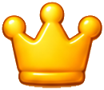
assets/icons/hud-crown-best.png130 × 113 · RGBARow plate / label text excluded. All enclosed interior highlights are filled opaque from the source RGB.assets/icons/hud-trophy-score.png140 × 118 · RGBARow plate / numeral text excluded. Hole policy: the two genuine handle openings stay transparent (they show the plate's shadowed tan); the cup-body shine and every pale-gold interior region are filled opaque from the source RGB.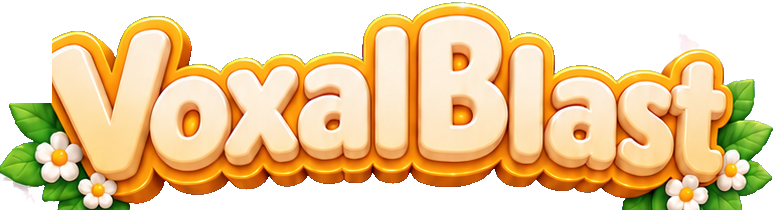
assets/icons/logo-voxalblast.png775 × 210 · RGBASubtitle band (CJK tagline, top row measured at source y=420) deliberately excluded. Three exclusion rects remove non-logo background that overlaps the window corners: tree foliage top-left, a branch top-right, and a tan scene object bottom-left; see 'exclude_rects_in_source'. Near-white daisy petals rely on their warm shading plus enclosed-interior fill; the outermost petal tips that sit against the blue sky may be a little soft.assets/icons/nav-crown-small.png107 × 86 · RGBACut from the cream button face; button border/plate intentionally not included. All enclosed interior highlights are filled opaque from the source RGB - the crown must have no transparent speckling inside the gold.assets/icons/play-triangle.png87 × 91 · RGBALowest-contrast cut in the set: glyph sits on the gold pill, so the mask is a per-row background-difference rather than a colour class. Enclosed regions are filled opaque from the source RGB, so the solid gold triangle carries no transparent pinholes.assets/icons/plus-gold.png85 × 87 · RGBACut from the cream button face.assets/icons/settings-book.png84 × 71 · RGBAPage gutter of the book is kept opaque (enclosed interior fill).assets/icons/settings-close-x.png35 × 36 · RGBACut from the gold disc only; the cream ring and the leaf trim behind the disc are excluded.assets/icons/settings-home.png83 × 79 · RGBAHouse glyph; recessed areas follow the source shading (one enclosed hole kept transparent). No row plate or label text.assets/icons/settings-restart.png57 × 62 · RGBAWhite glyph on the saturated red plate; plate is not included.assets/icons/settings-speaker.png83 × 77 · RGBASpeaker body plus two sound-wave arcs are separate components; all are kept (min_area 40). No row plate or label text included.assets/icons/settings-turn.png78 × 79 · RGBACurved block-turn arrow cut from the flat cream row; no row plate or label text.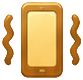
assets/icons/settings-vibration.png83 × 80 · RGBASide motion arcs are separate small components and are kept (low min_area).assets/panels/close-button.png101 × 109 · RGBAIncludes fixed X glyph. Button needs localized aria-label. Do not overlay a second X.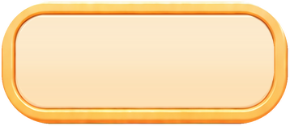
assets/panels/home-nav.png358 × 156 · RGBAUnlettered navigation shell; crown/gear and localized label are separate elements.assets/panels/home-primary.png675 × 194 · RGBAContinue background. No arrow or text. Endcaps are reconstructed; not pixel-identical to flower-covered concept. Endcaps/frame are resampled from the clean home-nav source (home bbox 435,1578,793,1734), not recovered hidden pixels.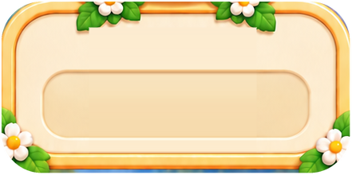
assets/panels/home-record.png441 × 220 · RGBABody-only high-score panel. Render large crown separately; use fixed aspect ratio, not nine-slice (internal number recess).assets/panels/home-secondary.png674 × 155 · RGBANew Game background; no plus/label; floral trim omitted from stretchable base. Endcaps/frame are resampled from the clean home-nav source (home bbox 435,1578,793,1734), not recovered hidden pixels.assets/panels/keyboard-hint.png183 × 50 · RGBANo WASDQE letters baked in; use real DOM kbd/text.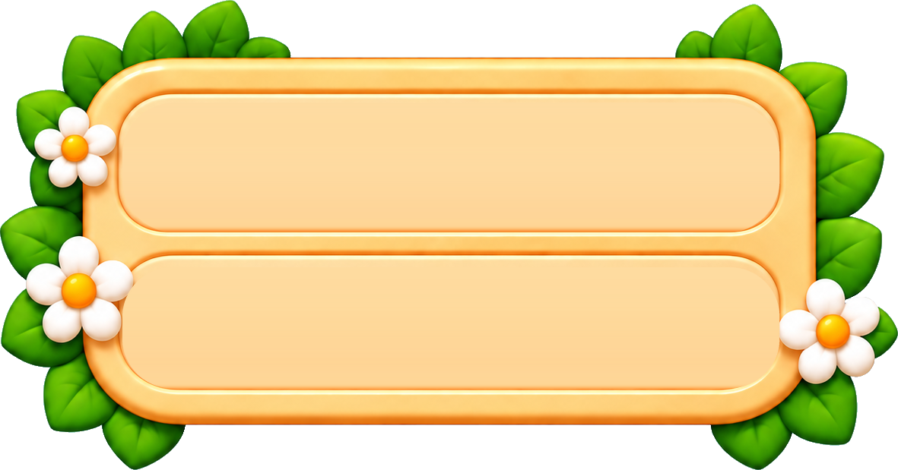
assets/panels/score-panel.png1181 × 619 · RGBAFixed-aspect decorated plaque, NOT nine-slice. Both icons/labels/numbers are removed. BEST=crown, SCORE=trophy via separate DOM layers.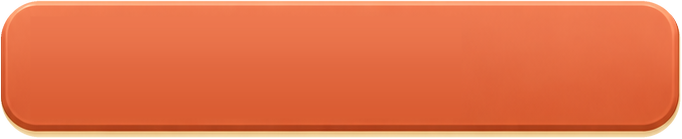
assets/panels/settings-danger.png682 × 139 · RGBARestart background; render restart glyph and localized label separately.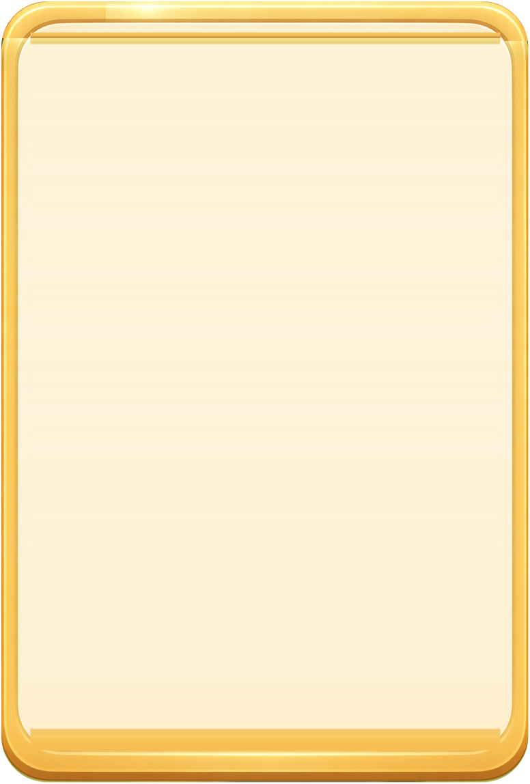
assets/panels/settings-modal.png776 × 1148 · RGBAEmpty scalable modal shell. Header, close, six/seven rows and corner ornaments are separate; never display this as a whole settings screenshot.assets/panels/settings-row.png682 × 139 · RGBAReusable empty row for sound/haptics/drag-turn/help/home and any existing language row.assets/panels/toggle-off.png121 × 71 · RGBAOFF is reconstructed, not present in approved all-ON concept. Use muted track + left thumb so state is not encoded only by color.assets/panels/toggle-on.png121 × 71 · RGBAEntire ON toggle; scale uniformly, do not nine-slice. State remains controlled by real DOM button.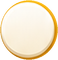
assets/panels/toggle-thumb.png58 × 60 · RGBAOptional separate thumb; do not mirror it, preserve light direction.